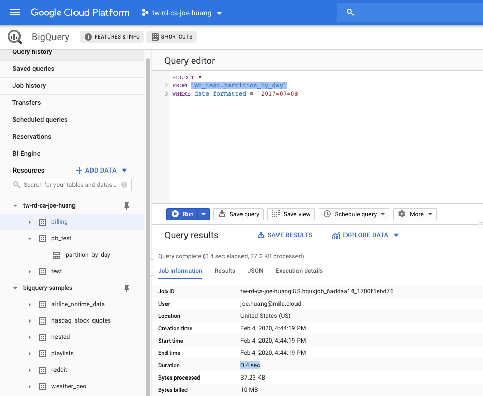

[BigQuery] 淺玩 Date-Partitioned | Date-Partitioned Tables in BigQuery
Blog URL: https://www.qwiklabs.com/focuses/3694?parent=catalog
Status: Completed
Types: BigQuery, GCP
▌什麼是Partition？
Partition 說明
Partitioned table是原始table中擷取出來的片段的table，因為原本的table太大，而我們僅拿我們要的資料，所以可以篩選過常用且必需的資料即可。如此可以更簡單管理，且加速query的速度，而增進query的速度也是間接首你節省成本，因為BigQuery的計價是以每一次query的資料量來計價。
A partitioned table is a table that is
divided into segments, called partitions,that make it easier to manage and query your data. By dividing a large table into smaller partitions, you can improve query performance, and control costs by reducing the number of bytes read by a query.
Partition 目的
過去會使用WHERE，拿時間當作條件篩選，這樣的作法同樣也是做全表的掃描，其實是很浪費資源的。如果你只是想要看某個特定時間呢？也是會跑一次全表的掃描，如果有date-partitioned tables就增加query的效率，我們僅挑出特定時間就好
Scanning through the entire dataset everytime to compare rows against a WHERE condition is
wasteful. This is especially true if you only really care about records for a specific period of time like:
- All transactions for the last year
- All visitor interactions within the last 7 days
- All products sold in the last month
- 以百貨業來看，週年慶時期 10-11月
- 以電子業來看，Q3旺季出貨
▌Partition 實作
- 跑一般全表的 Query
- 建立Partition Table
- 實測 Partition Query
- 比較二次結果
1. 全表的 Query
我們使用公開data，名為data-to-insights.ecommerce.all_sessions_raw，查詢四個fullVisitorId, date, city, pageTitle項目，時間限定在20170708，最後檢視前 5 個記錄
SELECT DISTINCT
fullVisitorId,
date,
city,
pageTitle
FROM `data-to-insights.ecommerce.all_sessions_raw`
WHERE date = '20170708'
LIMIT 5Sample1:
WHERE date = '20170708'in 1.5s (Query complete
(1.5 sec elapsed, 1.7 GB processed))
Worker timing in General Query
Within each stage, workers execute each action according to the query plan. For more information on workers and interpreting results, please see our documentation.
- Elapsed time
- Slot time consumed
- Bytes shuffled
- Bytes spilled to disk
SELECT DISTINCT
date,
fullVisitorId,
FROM `data-to-insights.ecommerce.all_sessions_raw`
WHERE date = '20170708'- Job Info
Execution details
2. 建立 Partition Table
Partition Table是依照日期來做切割，你可以看到使用PARSE_DATE()，PARSE_DATE函數用於日期字段(存儲為string)，以便將其轉換為適當的日期類型進行分區。
Instead of scanning the entire dataset and filtering on a date field like we did in the earlier queries, we will now setup a date-partitioned table. This will allow us to completely ignore scanning records in certain partitions if they are irrelevant to our query.
PARSE_DATE(format_string, date_string)
說明：
使用 format_string 與日期的字串表示傳回 DATE 物件。
使用 PARSE_DATE 時，請注意下列幾點：
- 未指定的欄位。任何未指定的欄位都從
1970-01-01開始。 - 區分大小寫的名稱。例如
Monday、February等的名稱都不區分大小寫。 - 空白字元。格式字串中的一或多個連續空格字元都符合日期字串中的零或多個連續空格字元。此外，一律允許日期字串中的前置與尾隨空格字元 – 即使它們不在格式字串中也一樣。
- 格式優先順序。當二 (或多) 個格式元素具有重疊資訊 (例如
%F與%Y都影響到年) 時，最後一個格式元素一般會覆寫任何之前的格式元素。
如需這個函式支援的格式元素清單，請參閱 DATE 的支援格式元素。
傳回資料類型：
DATE
#standardSQL
CREATE OR REPLACE TABLE ecommerce.partition_by_day
PARTITION BY date_formatted
OPTIONS(
description="a table partitioned by date"
) AS
SELECT DISTINCT
PARSE_DATE("%Y%m%d", date) AS date_formatted, fullvisitorId
FROM `data-to-insights.ecommerce.all_sessions_raw`執行產生一個partition
Partition內容
分別有Schema, Details, Preview
- Schema
從PARSE_DATE(format_string, date_string)處理後，僅留下date_formatted, fullvisitorId
- Preview
依據date_formatted, fullvisitorId
從原本21,552,195 經過SELECT DISICT篩選剩下478,323 row

Details
我們再來細看裡面的內容Table size: 只剩下13.17MB
Table type: 已不是
table, 而是Partitioned
Create_pb results
Job Info

execution
Worker timing
3. 實測 Partition Query
原本目標FROM data-to-insights.ecommerce.all_sessions_raw
換成data-to-insights.pb_test.partition_by_day，也就是partition
#standardSQL
SELECT *
FROM `pb_test.partition_by_day`
WHERE date_formatted = '2017-07-08'
#Or
SELECT DISTINCT
date_formatted,
fullVisitorId,
FROM `pb_test.partition_by_day`
WHERE date_formatted = '2017-07-08'Query results in
0.4s
時間僅用了0.4秒小於全表的查詢，相信你的表越大，經過partition的篩選效果會更顯著
execution details
Worker timing
Others query 2018-06-08
為什麼這麼快呢，因為只跑了37.2KB的data
Query complete (0.4 sec elapsed, 37.2 KB processed)
這次處理的37.2KB，這只是你查詢的一小小小小部份
4. 結論：比較二次結果
速度結果主要取決於「Table大小」、「read time」、「compute time」，因此只要善用Patitioned table，就可以同時降低以上三個關鍵因素，不管理讀取資料或是運行時間
Reference:
- Worker timing in General Query
https://cloud.google.com/bigquery/query-plan-explanation?hl=en_US - Creating Date-Partitioned Tables in BigQuery
https://www.qwiklabs.com/focuses/3694?parent=catalog